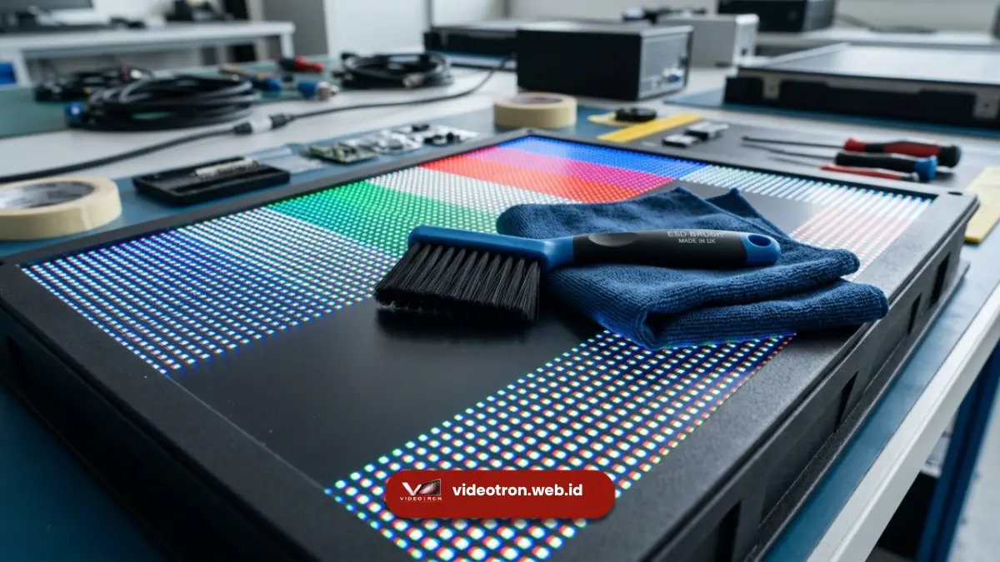

Frekuensi ideal maintenance videotron outdoor umumnya lebih rapat dibanding videotron indoor karena paparan langsung terhadap debu, hujan, dan sinar matahari.
Pengecekan visual harian, pembersihan modul bulanan, dan kalibrasi menyeluruh tahunan menjadi kombinasi yang direkomendasikan. Videotron outdoor yang mengikuti frekuensi ini cenderung memiliki performa layar yang lebih stabil sepanjang tahun.
- Videotron outdoor idealnya diperiksa secara visual setiap hari oleh operator di lapangan.
- Pembersihan modul dan pengecekan waterproofing sebaiknya dilakukan minimal sebulan sekali.
- Musim hujan meningkatkan risiko kelembapan masuk ke dalam kabinet videotron.
- Kalibrasi warna menyeluruh direkomendasikan setahun sekali untuk menjaga konsistensi tampilan.
- Layanan maintenance rutin dari videotron.web.id membantu menjaga videotron outdoor tetap optimal sepanjang musim.
- 1. Mengapa Videotron Outdoor Membutuhkan Frekuensi Maintenance Lebih Tinggi?
- 2. Apa Saja Faktor Cuaca yang Memengaruhi Frekuensi Maintenance?
- 3. Bagaimana Jadwal Maintenance Videotron Outdoor Saat Musim Hujan?
- 4. Apa Tanda Videotron Outdoor Membutuhkan Maintenance Segera?
- 5. Apa Saja Titik Pemeriksaan Utama pada Videotron Outdoor?
Mengapa Videotron Outdoor Membutuhkan Frekuensi Maintenance Lebih Tinggi?
Videotron outdoor membutuhkan frekuensi maintenance lebih tinggi karena terus-menerus terpapar debu jalanan, kelembapan udara, dan perubahan suhu ekstrem antara siang dan malam.
lingkungan yang keras ini membuat komponen elektronik di dalamnya bekerja lebih berat dibanding videotron yang terpasang di ruangan tertutup.
Paparan sinar matahari langsung juga mempercepat proses pemuaian dan penyusutan material kabinet, yang lama-kelamaan dapat memengaruhi kerapatan sambungan antar modul.
Tanpa pengecekan rutin, celah kecil pada sambungan ini berpotensi menjadi jalur masuk air saat hujan deras.
Apa Saja Faktor Cuaca yang Memengaruhi Frekuensi Maintenance?
Faktor cuaca yang paling memengaruhi frekuensi maintenance videotron outdoor adalah curah hujan, tingkat kelembapan, dan intensitas paparan sinar matahari langsung.
Daerah dengan curah hujan tinggi umumnya membutuhkan pengecekan waterproofing yang lebih sering dibanding daerah kering, sementara daerah pesisir dengan kadar garam udara tinggi berisiko lebih besar mengalami korosi pada komponen logam.
Bagaimana Jadwal Maintenance Videotron Outdoor Saat Musim Hujan?
Jadwal maintenance videotron outdoor saat musim hujan perlu ditingkatkan frekuensinya, terutama untuk pengecekan sistem drainase kabinet dan kondisi seal karet pada sambungan modul.
Genangan air di sekitar area pemasangan juga perlu dipantau agar tidak merembes ke bagian bawah struktur videotron.
Selain itu, kelembapan tinggi selama musim hujan dapat memicu kondensasi di dalam kabinet videotron, terutama jika sistem ventilasi tidak berfungsi optimal.
Pengecekan berkala terhadap kipas pendingin dan jalur ventilasi menjadi bagian penting dari jadwal maintenance pada periode ini.
Apa Tanda Videotron Outdoor Membutuhkan Maintenance Segera?
Tanda videotron outdoor membutuhkan maintenance segera antara lain munculnya modul yang meredup tidak merata, garis atau blok warna yang tidak stabil, dan suara dengungan tidak wajar dari kabinet.
Tanda-tanda ini sebaiknya tidak dibiarkan berlarut-larut karena berpotensi berkembang menjadi kerusakan yang lebih luas.

Apa Saja Titik Pemeriksaan Utama pada Videotron Outdoor?
Titik pemeriksaan utama pada videotron outdoor meliputi permukaan modul LED, sistem waterproofing, kabel dan konektor, serta kipas pendingin kabinet.
Keempat titik ini menjadi fokus utama karena paling rentan terdampak kondisi cuaca luar ruangan secara langsung.
Permukaan modul diperiksa dari sisi kebersihan dan kecerahan warna yang merata di seluruh panel.
Sistem waterproofing diperiksa dari kondisi seal karet dan penutup kabel yang menghubungkan antar unit videotron. Kabel dan konektor diperiksa untuk mendeteksi tanda korosi dini, sementara kipas pendingin dipastikan bebas debu agar sirkulasi udara di dalam kabinet tetap lancar.
Menjaga videotron outdoor tetap prima membutuhkan jadwal maintenance yang konsisten dan disesuaikan dengan kondisi cuaca setempat.
Percayakan perawatan videotron outdoor Anda kepada tim berpengalaman videotron.web.id agar performa layar tetap terjaga sepanjang musim.

Hawa Nadira
LED Technology Consultant dan Visual Educator
Konsultan dan spesialis solusi display digital berdedikasi tinggi yang fokus membagikan panduan edukatif mengenai penerapan teknologi layar LED videotron untuk kebutuhan interior modern di Indonesia.